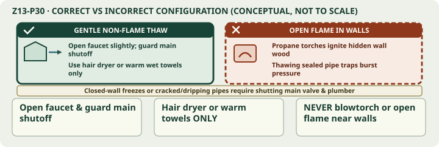

Z13-P30 · Home survival and utilities · New manuscript
Thaw frozen pipes safely without open flames or concealed wall fires
Restore flow in accessible frozen pipes safely while preventing structural fires and scalding bursts.
When it applies · Suspected frozen accessible interior water pipes once heat is restored.
Equipment · Hair dryer, warm wet towels, space heater at safe 3-foot clearance (never unattended), dry bucket, and main shutoff access.

Actions
- Keep the affected faucet OPEN slightly while warming so melting water and steam can relieve pressure safely as ice loosens, and confirm someone stands ready at the main water shutoff in case the frozen pipe already cracked beneath the ice plug.[U10, U08]
- Apply gentle indirect heat ONLY to accessible exposed pipe sections using a handheld hair dryer, warm soaked towels, or UL-listed electric heat tape installed strictly per label—working steadily from the open faucet back toward the frozen section.[U10, U03]
- NEVER use a propane blowtorch, kerosene/propane heater, charcoal stove, or open flame to thaw pipes—open flames ignite concealed wood framing and insulation silently inside wall cavities.[U10, U03, U04]
Failure recognition · Aiming a handheld propane torch into a basement joist bay to thaw a frozen copper pipe, igniting hidden dust and dry framing inside the wall.[U10, U04]
Verify · Confirm faucet is open, main shutoff is ready, gentle non-flame heat is used, and zero water drips appear as ice melts.[U10, U08]
Stop or change course · Pipes frozen inside closed walls, visible split/bulged copper/PEX, or dripping water as ice thaws require shutting off the main water valve immediately and calling a licensed plumber.[U10, U08]
Evidence and editorial notes
- U03 · NFPA · Heating Fire Safety (current web edition)
- Section: Heating Equipment Safety > Space Heaters, Fireplaces, and Clearances · Conditions: Residential winter heating and supplemental backup heating
Support: Maintain at least a 3-foot clearance between anything flammable and any heating source (space heaters, fireplaces, wood stoves), inspect chimneys annually, use only the fuel specified by the heater manufacturer, and never use kitchen ovens to heat homes.
Limitations: Unvented fuel-burning heaters also create severe carbon monoxide and indoor air hazards; local building codes govern installations. · Conflicting evidence: None; aligns with CPSC-C and READY-HOME-F.
Editorial note: Grounds safe supplemental heating clearances and stop boundaries in Z13. · Specialist reviewer: Fire safety and licensed HVAC trades
Primary source · checked 2026-11-24 - U04 · FEMA / Ready.gov · Home Fires (current web edition)
- Section: Home Fires > Smoke Alarms, Fire Extinguishers, and Escape Plans · Conditions: Residential fire prevention during outages and supplemental heating
Support: Test smoke alarms monthly on every level and outside sleeping areas, keep two exits clear from every room, store fuels outside living spaces in approved containers, and evacuate immediately if a fire exceeds incipient containment.
Limitations: Candles and improvised indoor flames dramatically elevate outage house-fire deaths. · Conflicting evidence: None; integrates with CPSC CO-alarm rules (C09).
Editorial note: Anchors outage fire prevention, fuel storage, and exit readiness in Z13. · Specialist reviewer: Fire prevention and residential safety
Primary source · checked 2026-11-24 - U08 · FEMA / Ready.gov · Water Storage and Emergency Supply (current web edition)
- Section: Water > Emergency Household Supply, Shutoff, and Alternate Indoor Sources · Conditions: Household plumbing disruptions, water-main breaks, or winter freeze outages
Support: Store at least 1 gallon per person per day for several days (two weeks where feasible for extended outages), know the main water shutoff valve location, and recognize clean indoor water-heater reserve boundaries only after shutting off power/gas and confirming supply safety.
Limitations: Never use water from radiators, hot-water boilers, or chemically treated toilet tanks for drinking. · Conflicting evidence: None; complements CDC-S (W06, W14).
Editorial note: Covers household water shutoffs, pipe-freeze prevention, and safe indoor reserves. · Specialist reviewer: Plumbing safety and drinking-water public health
Primary source · checked 2026-11-24 - U10 · FEMA / Ready.gov · Winter Weather (current web edition)
- Section: Winter Household Resilience > Frozen Pipes, Ice Dams, and Heating Loss · Conditions: Sub-zero Upper Midwest winter outages and prolonged cold snaps
Support: Prevent burst pipes by insulating exposed lines, keeping cabinet doors open, shutting off and draining water lines per plumbing guidance if indoor temperatures drop toward freezing, and consolidating household occupants into one safe insulated interior room.
Limitations: Draining hydronic boilers or gas water heaters requires exact manufacturer/plumber steps to prevent equipment damage or gas leaks. · Conflicting evidence: None; regionalizes winter home defense for Minnesota conditions.
Editorial note: Anchors winter pipe protection, thermal-zone consolidation, and abandonment thresholds. · Specialist reviewer: Residential plumbing, HVAC, and cold-weather emergency management
Primary source · checked 2026-11-24
Source lineage · FEMA Ready.gov Winter Weather and NFPA; new manuscript · Classification · New manuscript.